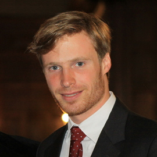

Mathematician
I joined Josef Teichmann's working group in financial mathematics at ETH Zürich as a PostDoc in August 2013.
Previously, I was part of the education research and development laboratory Harvard EdLabs, where I built formal models related to learning and deepened my knowledge in stochastic analysis and optimal control.
I did my PhD in mathematics at the University of Vienna in shape analysis and comparison. More specifically, I worked on Riemannian geometry in various infinite dimensional spaces of interest, including spaces of sub-manifolds, diffeomorphisms and Riemannian metrics.
Research interests: mathematical finance, stochastic analysis, stochastic optimal control, differential geometry in infinite dimensions, shape analysis.
Philipp Harms, David Stefanovits.
Affine representations of fractional processes with
applications in mathematical finance.
arXiv:1510.04061.
Philipp Harms, David Stefanovits,
Josef Teichmann, Mario Wüthrich.
Consistent recalibration of yield curve models.
arXiv:1502.02926.
Roland Fryer, Philipp Harms, Matthew Jackson.
Updating Beliefs When Evidence is Open to Interpretation: Implications for Bias and Polarization.
SSRN working paper 2263504.
pdf
Roland Fryer, Philipp Harms.
Two-Armed Restless Bandits with Imperfect Information: Stochastic Control and Indexability.
arXiv:1506.07291.
Martin Bauer,
Martins Bruveris,
Philipp Harms,
Jakob Møller-Andersen.
Second order elastic metrics on the shape space of curves.
1st International Workshop on
Differential Geometry in Computer Vision for Analysis of Shapes, Images and Trajectories, 2015.
arXiv:1507.08816.
Martin Bauer,
Martins Bruveris,
Philipp Harms,
Jakob Møller-Andersen.
Curve Matching with Applications in Medical Imaging.
5th MICCAI Workshop on
Mathematical Foundations of Computational Anatomy, 2015.
arXiv:1506.08840.
Martin Bauer, Philipp Harms.
Metrics on Spaces of Surfaces where Horizontality equals Normality.
Differential Geometry and its Applications 39 (2015), pp. 166-183.
arXiv:1403.1436.
Martin Bauer, Philipp Harms, Peter W. Michor.
Sobolev Metrics on Shape Space, II: Weighted Sobolev Metrics and Almost Local Metrics.
Journal of Geometric Mechanics 4, 4 (2012), pp. 365-383.
arXiv:1109.0404.
Martin Bauer, Martins Bruveris,
Philipp Harms, Peter W. Michor.
Geodesic distance for right invariant Sobolev metrics of fractional order on the diffeomorphism group.
Annals of Global Analysis and Geometry 44, 1 (2013), pp. 5-21.
arXiv:1105.0327.
Martin Bauer, Philipp Harms, Peter W. Michor.
Sobolev metrics on the manifold of all Riemannian metrics.
Journal of Differential Geometry 94, 2 (2013), pp. 187-208.
arXiv:1102.3347.
Martin Bauer, Martins Bruveris,
Philipp Harms, Peter W. Michor.
Vanishing geodesic distance for the Riemannian metric with geodesic equation the KdV-equation.
Annals of Global Analysis and Geometry 41, 4 (2012), pp. 461-472.
arXiv:1102.0236.
Martin Bauer, Philipp Harms, Peter W. Michor.
Curvature weighted metrics on shape space of hypersurfaces in n-space.
Differential Geometry and its Applications 30, 1 (2012), pp. 33-41.
arXiv:1102.0678.
Martin Bauer, Philipp Harms, Peter W. Michor.
Sobolev metrics on shape space of surfaces.
Journal of Geometric Mechanics 3, 4 (2011), pp. 389-438.
arXiv:1009.3616.
Philipp Harms, Andrea C. G. Mennucci.
Geodesics in infinite dimensional Stiefel and Grassmann manifolds.
Comptes Rendus Mathematique 350, 15-16 (2012), pp. 773-776.
arXiv:1209.2878.
Martin Bauer, Philipp Harms, Peter W. Michor.
Almost local metrics on shape space of hypersurfaces in n-space.
SIAM Journal on Imaging Sciences 5, 1 (2012), pp. 244-310.
arXiv:1001.0717.
Martin Bauer, Philipp Harms.
Hörmander's condition for normal bundles on spaces of immersions.
Math on the Rocks – Shape Analysis Workshop in Grundsund (2015).
Martin Bauer, Philipp Harms.
Metrics with prescribed horizontal bundle on spaces of curves.
Math on the Rocks – Shape Analysis Workshop in Grundsund (2015).
Philipp Harms.
Metrics on spaces of immersions where horizontality equals normality.
Math in the Cabin – Shape Analysis Workshop in Bad Gastein (2014).
eprint: hal-01076953.
Sobolev metrics on shape space of surfaces.
PhD thesis,
University of Vienna, 2010.
arXiv:1211.3515.
The Poincaré Lemma in Subriemannian Geometry.
Master thesis,
Vienna University of Technology, 2008.
arXiv:1211.3531.
philipp.harms@math.ethz.ch
Last updated in October 2015 by Philipp Harms.